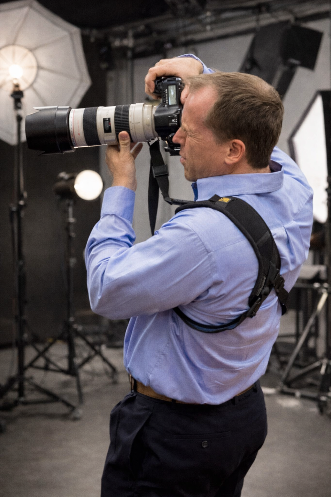

From weddings and family milestones to corporate events, portraits, sports, and Catholic sacraments, we preserve life's meaningful moments so they can be remembered, shared, and cherished for years to come.

From the first nervous breath to the last toast, from the opening welcome to the closing keynote, from the quiet moments in between to the energy that fills the room, we capture every heartfelt emotion as it happens.
Whether it's the anticipation before you walk down the aisle, the pride on a graduate's face, the raw energy of an athlete at their best, the quiet reverence of a liturgy, or the confidence of a brand stepping into its moment—we are ready.
Each image reflects something real—the love between two people, the connection within a family, the identity of a brand, and the spirit of a celebration.
Every photo is captured with care, authenticity, and nearly two decades of devotion, preserving what time cannot—the raw emotion, the unfiltered beauty, the moments you will want to relive again and again.
We're passionate about telling your story through our lenses, whether it's a wedding in Austin, a family celebration or portrait session nearby, or an event anywhere in the world.
Five specialties, each with its own language. Whether your day is sacred, athletic, corporate, or deeply personal, there's a Nydam Photography approach built for it.
You'll forget the centerpieces. You won't forget the look on his face.
Your wedding day moves fast. We move with it, preserving every quiet moment, every glance, every burst of joy from the ceremony to the last dance. No interruptions, no stiff posing. Just your story, told honestly.
First impressions close deals. Make yours count.
Your brand deserves images that actually look like you at your best. Clean, confident headshots, team photos, and event coverage delivered promptly and ready for LinkedIn, press kits, and websites.
They're only this age once. Make sure you remember it.
Team portraits, action photography, and season packages for youth leagues, competitive clubs, and high school programs across Austin, Round Rock, Hutto, and Pflugerville. Volleyball, soccer, basketball, and more.
Some moments are sacred. They deserve a photographer who understands that.
Weddings, Baptisms, First Communions, Confirmations, and sacramental celebrations across the Diocese of Austin. A respectful, unobtrusive approach that honors the liturgy and lets the sacred moment breathe.
Not a studio. Not a timer. Just you, real light, and time to breathe.
In-home sessions, graduation portraits, and family photography in natural Austin settings — at a pace that feels entirely your own.
She's been dreaming of this day her whole life. So have you.
Every detail of a Quinceañera is worth preserving. The dress, the waltz, the family gathered around her. We save it all with the same care and artistry we bring to weddings: candid emotion, beautiful portraits, and every meaningful moment in between.
Nydam Photography runs The Photo Pro — an active Austin photography MeetUp community for photographers of all levels. Arlen Nydam leads online workshops, and the community regularly welcomes guest speakers from across the photography industry.
Whether you just picked up your first camera or you're a working professional, The Photo Pro is where photographers grow together. Arlen leads online workshops and the community regularly brings in other industry voices.
Join on MeetUp →Real answers to the questions clients and photographers ask most — from what to wear to a portrait session to how to choose a Catholic photographer in Austin.
Choosing the right wedding photographer in Austin is one of the most important decisions you'll make for your big day. Here's everything you need to know — from questions to ask to what to look for in a portfolio.
A specialized Catholic photographer approaches your sacrament differently than a general event photographer. Here's what that means for your family.
Team photo day doesn't have to be chaotic. Here's how to make your Austin youth sports team photos fast, fun, and professional.
From the golden-hour magic of Mount Bonnell to the wildflower meadows of the Domain greenway, Austin offers extraordinary backdrops for portrait sessions year-round. Here are my seven favorites after three years of shooting across the city.